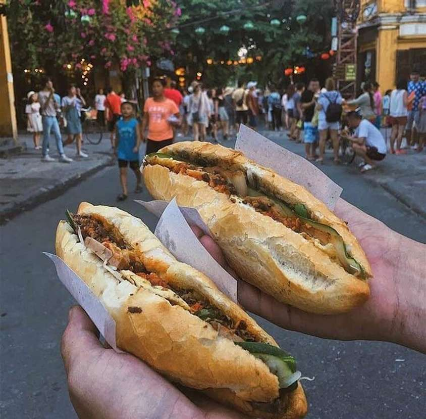

Kinh nghiệm du lịch Hội An khám phá phố cổ
Từ 400 năm trước, Hội An đã là một thương cảng đông đúc các thương nhân từ khắp thế giới, tạo nên nét văn hóa đa dạng, giao hòa giữa Đông – Tây. Ngày nay, Hội An là một trong những đô thị cổ hiếm hoi vẫn còn được bảo tồn gần như nguyên vẹn. Nếu bạn là người mê mẩn không khí hoài cổ, bình yên của phố cổ nhỏ bên sông Hoài này thì hãy lưu nhanh những kinh nghiệm du lịch Hội An tự túc dưới đây để tận hưởng một chuyến đi trọn vẹn nhất nhé.
Phố cổ Hội An luôn xếp hàng đầu trong danh sách những địa điểm du lịch ở Việt Nam bởi nhiều lý do. Đô thị nhỏ này là nơi giao thoa của nền văn hóa Đông – Tây; là sự kết hợp tinh hoa của các nước Việt, Trung, Nhật, châu Âu trong cả ẩm thực, kiến trúc, đến những truyền thống của người dân địa phương. Cùng với thiên nhiên hữu tình, vị trí thuận lợi, du lịch Hội An luôn được nhiều du khách lựa chọn khi ghé ngang dải đất miền Trung.
1.Thời điểm lý tưởng để du lịch Hội An
Sở hữu kiểu khí hậu hai mùa rõ rệt, hẳn nhiên là du lịch Hội An vào mùa khô (tháng 1 – tháng 7) sẽ được ưa thích hơn vào mùa mưa. Trong đó, thời gian lý tưởng nhất là từ tháng 2 – tháng 4, khi mà khí hậu vào xuân, đầu hè, thời tiết mát mẻ và nắng không quá gay gắt.
Ngoài thời gian này, bạn vẫn có thể chọn đến Hội An trong mùa mưa (tháng 8 – tháng 12). Khí hậu Hội An nhìn chung vẫn khá ôn hòa, không chịu nhiều ảnh hưởng của bão hay nhiệt độ chênh lệch cao giữa các mùa. Tuy nhiên cần lưu ý là mưa ở Hội An khá dai dẳng, và đôi khi sẽ gây lụt. Nếu bạn muốn được trải nghiệm cảm giác chèo thuyền giữa phố cổ thì du lịch Hội An trong thời gian này sẽ là một kỉ niệm thú vị.
Thế nhưng, theo những kinh nghiệm du lịch Hội An tự túc thì thời điểm đặc biệt nhất để ghé thăm thành phố này chính là vào ngày rằm hàng tháng. Cứ mỗi ngày 14 âm lịch, phố cổ sẽ tắt hết đèn và được thắp sáng với ánh đèn lồng lung linh, đủ màu sắc. Trong ngày này, những con đường ở phố cổ, hai bên bờ sông Hoài tràn ngập giai điệu của những bài hát cổ truyền, các hoạt động – trò chơi dân gian, và tất nhiên là không thể thiếu những món ăn truyền thống hấp dẫn.
2.Đến Hội An Bằng cách nào
Bằng máy bay
Cho một chuyến du lịch Hội An thuận lợi nhất, bạn có thể mua vé máy bay đi Đà Nẵng rồi tiếp tục đến Hội An. Các chuyến bay từ TP.HCM, Hà Nội hay các tỉnh thành khác đến Đà Nẵng chỉ mất xấp xỉ 1 giờ, có giá dao động trong khoảng 400.000 – 1.600.000 VND/ chiều.
Từ Đà Nẵng, có hai cách phổ biến nhất để đến Hội An là bằng taxi hoặc xe buýt.
- Taxi: Rất dễ dàng để bắt taxi tại sân bay Đà Nẵng và chỉ mất 45 – 55 phút để bạn di chuyển đến Hội An. Chi phí cho một chuyến taxi có giá 350.000 – 450.000 VND, tùy hãng và loại xe.
- Xe buýt: Phù hợp với du khách muốn tiết kiệm hay thích du lịch bụi, bạn có thể bắt xe buýt số 1 (Bến xe trung tâm Đà Nẵng – bến xe Hội An) với giá chỉ 25.000 VND/ lượt.
Bằng tàu hỏa
Cũng tương tự như đi máy bay, nếu đi bằng tàu hỏa, bạn sẽ dừng chân tại ga Đà Nẵng hoặc ga Trà Kiệu. Hành trình đi từ TP.HCM hoặc Hà Nội đến Đà Nẵng sẽ mất 15 – 20 giờ, giá vé trong khoảng 230.000 – 2.224.000 VND, tùy hành trình và loại ghế. Tham khảo giờ tàu chạy và mua vé trực tiếp tại
Bằng xe khách
Nếu không muốn ghé ngang Đà Nẵng mà trực tiếp đến Hội An thì vẫn có những chuyến xe chạy thẳng TP.HCM – Hội An, hoặc Hà Nội – Hội An. Các hãng xe phổ biến mà bạn có thể lựa chọn là Hạnh Café, Thiên An, The Sinh Tourist, với giá dao động 320.000 – 480.000 VND/ lượt.
Bằng xe máy
Nếu không muốn ghé ngang Đà Nẵng mà trực tiếp đến Hội An thì vẫn có những chuyến xe chạy thẳng TP.HCM – Hội An, hoặc Hà Nội – Hội An. Các hãng xe phổ biến mà bạn có thể lựa chọn là Hạnh Café, Thiên An, The Sinh Tourist, với giá dao động 320.000 – 480.000 VND/ lượt.
- Đi theo hướng Quốc lộ 1 về phía Nam, rẽ vào Vĩnh Điện. Đi hướng này bạn sẽ ghé thăm được Tháp Chàm Bằng Anh.
- Đi qua cầu sông Hàn, theo tỉnh lộ Đà Nẵng – Hội An. Tuyến đường này sẽ thuận tiện cho bạn nào muốn kết hợp tham quan Ngũ Hành Sơn.
Đường từ Đà Nẵng đến Hội An khá dễ đi, thông thoáng. Tuy nhiên nếu là lần đầu tiên đi phượt, bạn nên tham khảo các kinh nghiệm du lịch Hội An tự túc để chuyến đi được suôn sẻ nhất.
3.Địa điểm du lịch Hội An không nên bỏ lỡ
Chùa Cầu
Có thể được xem là biểu tượng của phố cổ, chùa Cầu là minh chứng rõ ràng nhất cho sự giao thoa văn hóa đa dạng của Hội An. Bên trong chùa có đặt tượng thờ Bắc Đế Trấn Võ, vị thần bảo vệ vùng đất và mang đến những điều tốt đẹp cho con người.
Hội quá Phúc Kiến
Hội quán Phúc Kiến có thờ Thiên Hậu Thánh Mẫu, là nơi các thương nhân Trung Quốc thường ghé vào cầu nguyện cho một chuyến biển mưa thuận gió hòa. Sau nhiều lần trùng tu, hội quán đến nay vẫn giữ được nét kiến trúc đặc trưng với cổng tam quan, điện thờ, và các vòng nhang lớn mang đến không khí linh thiêng cho ngôi đền.
Hội quán Triền Châu

Được xây dựng từ sớm, khoảng giữa thế kỷ thứ 19, hội quán Triều Châu là nơi cộng đồng Hoa kiều xây dựng để thờ Phục Ba Tướng quân Mã Viện – vị tướng nổi tiếng thời Hán, được thờ như một vị thần bảo vệ người dân đi biển (“Phục Ba” có nghĩa là chinh phục sóng gió)
Hệ thống nhà cổ
Nhà cổ Hội An thường được xây dựng hoàn toàn bằng gỗ, ngói lợp âm dương, được chia thành nhiều gian, và là nơi sinh sống - làm ăn của nhiều thế hệ trong một dòng họ.
Chợ đêm Hội An
Là địa điểm dạo chơi buổi tối không thể bỏ qua khi du lịch Hội An, chợ đêm trên phố Nguyễn Hoàng là nơi tập trung những điều đậm chất Hội An nhất. Hàng chục quầy hàng thủ công mỹ nghệ, ẩm thực, và các vật phẩm lưu niệm được bày bán tại đây, trong không gian lung linh, hoài cổ của những ánh đèn lồng đủ màu sắc.
Bảo tàng Precious Heritage của Réhahn
Là bảo tàng riêng trưng bày những bức chân dung mà nhiếp ảnh gia Pháp Réhahn đã ghi lại trên hành khám phá Việt Nam của mình. Mỗi bức ảnh là một câu chuyện về con người được thể hiện chân thực dưới ống kính đầy nghệ thuật.
Không gian triển lãm nghệ thuật Cotic
Nếu là một người yêu nghệ thuật truyền thống Việt, đặc biệt là tuồng, thì hẳn bạn không thể bỏ qua Cotic. Với mong muốn lưu truyền một nét đẹp văn hóa – nghệ thuật của nước nhà, Cotic chú trọng đến từng góc bài trí nhỏ, mang đến một không gian đậm đà bản sắc Việt.
5.Ẩm thực Hội An có gì hấp dẫn
Cao lầu
Là món ăn minh chứng cho nền ẩm thực đa dạng của Hội An, cao lầu có sợi mì to như mì soba Nhật; thịt kiểu xá xíu Trung Hoa; ăn kèm với rau sống, bánh phồng kiểu Việt.
Hến xào - Bánh đập
Bánh đập là món bánh độc đáo, kết hợp giữa bánh tráng khô và ướt. Khi ăn thì phải đập nhẹ để hai loại bánh dính vào nhau. Bánh đập dân dã nhất là chấm mắm, đôi chỗ sẽ ăn kèm cùng hến xào cho thêm phần đa dạng.
Cơm gà
Cơm gà được xem như món đặc sản nức tiếng mà không bí kíp du lịch Hội An tự túc nào có thể bỏ qua. Cơm dẻo được nấu với nước dùng gà và nghệ cho lên màu vàng ươm. Gà luộc trộn gỏi, thêm chút hành tây, đu đủ bào sợi, rau thơm, cùng nước mắm chua ngọt cho đậm đà.
Bánh xèo - Nem lụi
Là một tỉnh miền Trung, bánh xèo Hội An là kiểu bánh nhỏ, giòn rụm với đầy ắp thịt, tôm, mực. Một số nơi còn đặc biệt phục vụ bánh xèo với nem lụi, làm nên một phiên bản hấp dẫn khác cho món ăn quen thuộc.
Bánh bao - Bánh vạc
Là hai loại bánh hấp làm từ bột gạo, bánh bao có nhân thịt, nấm mèo; còn bánh vạc là nhân tôm giã nhuyễn. Món bánh dân dã được dọn kèm cùng chút hành phi, ăn với nước mắm ớt chua ngọt.
Bánh mì
Là món ăn “quốc dân” của Việt Nam, bánh mì Hội An vẫn rất được săn đón trong mọi kinh nghiệm du lịch Hội An tự túc được chia sẻ. Một ổ bánh mì “đầy ụ” với xá xíu, thịt nướng, chả lụa, pate và sốt bơ tự làm, đồ chua… sẽ đủ sức quyến rũ rất kỳ ai, dù bạn có là một tín đồ của món ăn này hay không.
Thịt xiên nướng
Nếu bạn hỏi Hội An có món ăn vặt gì thì câu trả lời chính là thịt xiên nướng. Sau một buổi chiều dạo phố cổ, hãy dừng chân bên bờ sông Hoài, thưởng thức món thịt nướng than hoa, ăn kèm với đu đủ chua giòn giòn, và nước sốt đặc trưng riêng của mỗi hàng quán.
Những món ăn vặt
Nếu bạn hỏi Hội An có món ăn vặt gì thì câu trả lời chính là thịt xiên nướng. Sau một buổi chiều dạo phố cổ, hãy dừng chân bên bờ sông Hoài, thưởng thức món thịt nướng than hoa, ăn kèm với đu đủ chua giòn giòn, và nước sốt đặc trưng riêng của mỗi hàng quán.
Các quán cà phê đẹp ở Hội An
Sau khi ăn uống “phủ phê”, đừng bỏ qua trải nghiệm thưởng thức không gian bình yên của phố cổ trong một quán cà phê cũng đậm chất hoài cổ.
© 2021 Mollyclo. All Rights Reserved.
VỀ MOLLYCLO
- Về chúng tôi
- Mollyclo Blog
- Hợp tác cùng chúng tôi
- Cơ hội nghề nghiệp
ĐỐI TÁC
- Đối tác đăng nhập
- Đối tác liên kết
- Chương trình cho người nổi tiếng
- Chương trình cho Đại lý
ĐIỀU KHOẢN SỬ DỤNG
- Điều khoản sử dụng
- Quyền riêng tư
- Chính sách Cookie
- Thưởng phát hiện lỗi phần mềm
- Chính sách và quy định
KÊNH THANH TOÁN